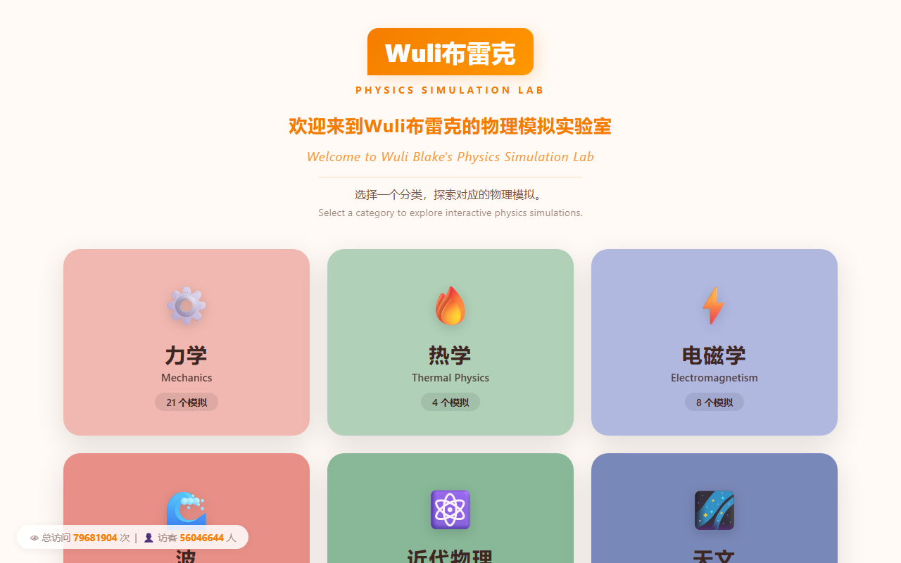
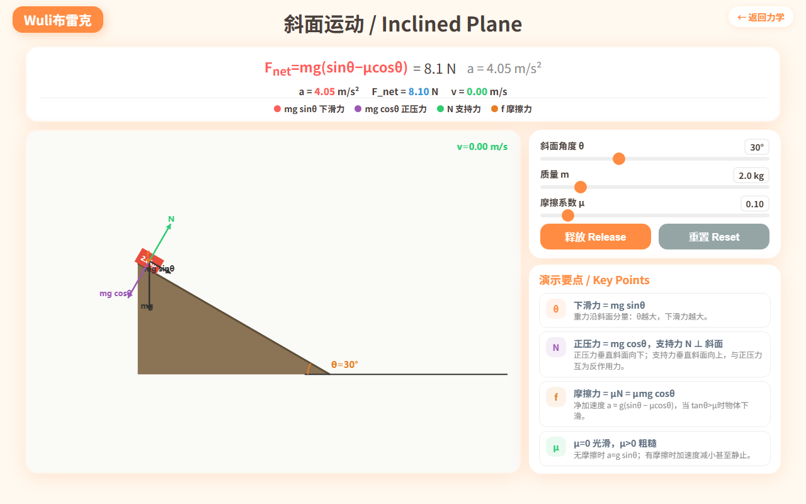
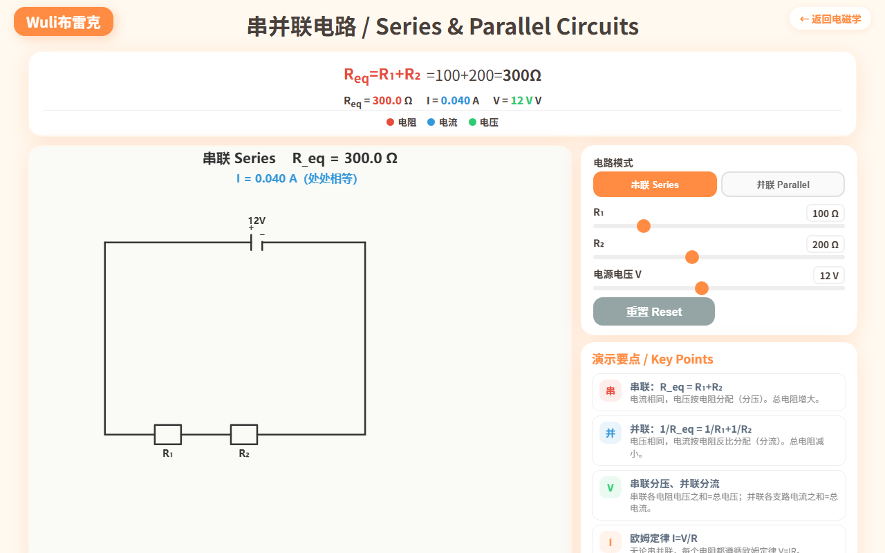
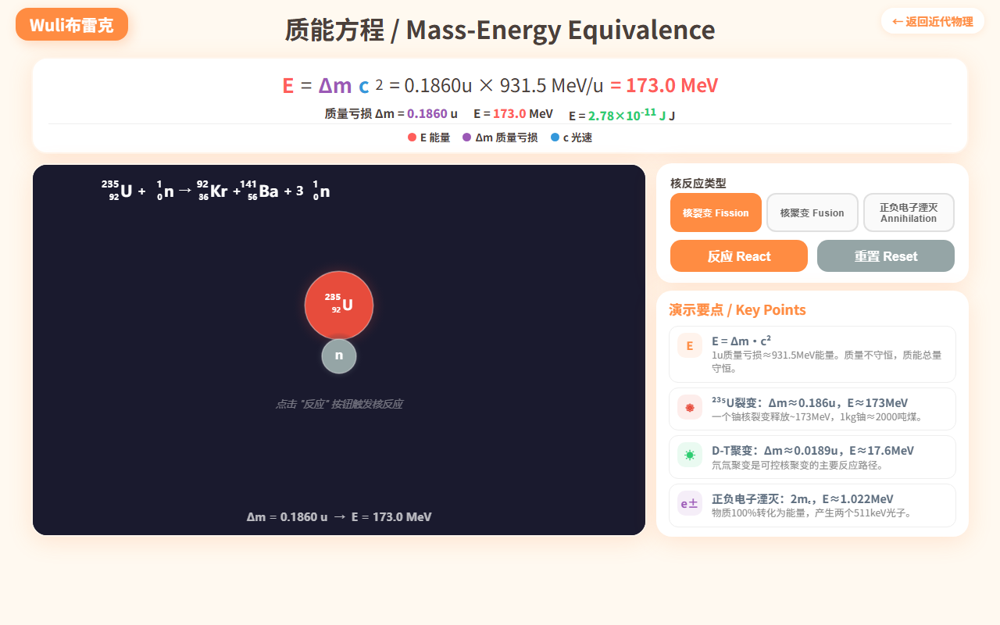
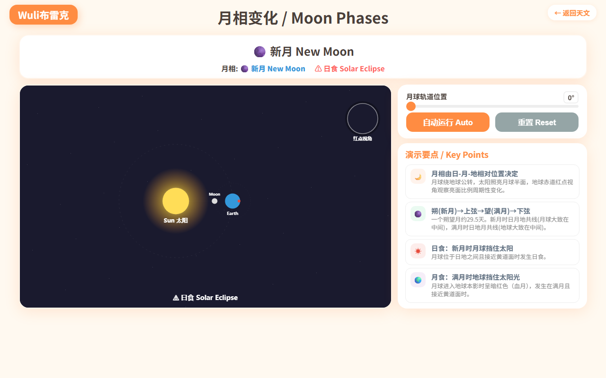

Wuli布雷克（Physics Simulation Lab）是一个完全免费的交互式物理模拟网站，涵盖 6大板块、50个知识点，从初中的密度、压强到高中的电磁学、近代物理，全部覆盖。
| 板块 | 模拟数 | 代表作 |
|---|---|---|
| ⚙️ 力学 | 21 | 斜面运动、抛体运动、动量守恒、能量守恒 |
| ⚡ 电磁学 | 8 | 串并联电路、洛伦兹力、电磁感应、安培力 |
| 🌊 波 | 10 | 双缝干涉、多普勒效应、驻波、偏振 |
| 🔥 热学 | 4 | 热传导、理想气体定律、热力学第一定律 |
| ⚛️ 近代物理 | 4 | 质能方程 E=mc²、光电效应、放射性衰变 |
| 🌌 天文 | 3 | 开普勒定律、万有引力、月相变化 |
不用下载任何APP，浏览器打开 gochyong/physics-simulations 就能用。电脑、平板、手机都适配。
每一个模拟都不是"播放动画"，而是可拖拽参数的实时计算引擎。改变滑块 → 公式同步更新 → 图像实时变化。

斜面运动：调节角度、质量、摩擦系数，力矢量实时变化，物体沿斜面下滑
知识点顺序参考人教版教材，从力学基础到近代物理，方便按章节查找。
每个知识点都有中英文名称，公式标注完整，学物理顺便学英语术语。
电阻用矩形、电池用长短线、导线闭合无断口，符合物理教材画法。

串并联电路：可切换串联/并联模式，等效电阻实时计算
用真实的核反应方程演示质量亏损如何转化为能量。铀核裂变、氘氚聚变、正负电子湮灭，标注质量数和质子数，点击"反应"按钮看能量爆发。

太阳固定中央，地球绕太阳公转，月球绕地球公转，地球赤道红点标注观察者视角。拖动角度看新月→上弦→满月→下弦的连续变化，日月地共线时标注日食/月食。

磁场方向（→/←）和电流方向（↗/↙）可独立切换，导线长度超出磁场范围时只计算有效长度，力的方向按左手定则自动判定。
1000个原子核的统计衰变模拟，实时曲线匹配 N=N₀e^(−λt)，半衰期标记线标注每个 T½ 时刻的剩余核数。
SPDT开关控制充电/放电，充电 τ=RC、放电 τ=RdC，V-t 曲线带坐标轴和时间常数标记。
.html 文件即可打开#物理学习 #高中物理 #免费学习资源 #交互式学习 #理科生必备 #STEM教育 #物理模拟 #Wuli布雷克